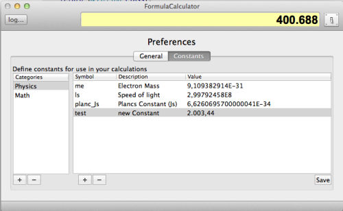
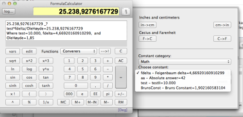

I have implemented a feature where you now can define constants to use in your formulas. The constants are defined in the preferences, and used in your formulas. Here is how to do it.ﾠ
Defining:ﾠ

1. Click in the preferences button on the toolbar.ﾠ
The preference button is right to the display. This is a toggle button, so when you are finished, use the same button to return to the calculator.ﾠ
2. Go to the "Constants" tab if it isn't already selected.ﾠ
You see two lists. One with some predefined categories to the left, and some constants in this category to the right. Below each list, there is a "+" and "-" button to add or remove category, or constants.ﾠ
3. Select a category, or add a new one.ﾠ
If you add a new one, (The + button below the list), a "New category" shows up in the list. Double click on it to edit its name.ﾠ
4. See the constants that is in this category. If its a new one, the list will be empty.ﾠ
The list contains your constants. The list has three columns. The Name, description and the constant value. You can drag the calculator wider to see more of the names. You can also drag the width of the columns, to adjust so you see all the text.ﾠ
5. Add a new constant.ﾠ
Press the "+" button below the constant list, to add a new entry. Double click on its name "xx", and write a new name. It has to start with a letter, contain no spaces or special characters. Underscore is OK. ﾠThis name will be the name that appears in your formula. It also has to be unique. If it isn't, when you save, it will be renamed adding a number to make it unique.ﾠ
The description is what you see when you select the constant for use. Here you can use all characters necessary.ﾠ
And the finally the third column: The numeric value of your constant. If it is a constant that have many decimals, enter as many as you have. How many you need, depends on your formula, but when you define them, go for maximum. It will never be wrong to have more accuracy than needed.ﾠ
When finished, hit the save button.ﾠ
To use your new constant.ﾠ

Go back to the calculator hitting the "preferences" button once more. When you are back, click the "select lib" popup and choose the "converters & constants".ﾠ
A side-drawer opens, and here you select the category you put your constant in.ﾠ
If you clear your formula, and select the constant you defined, press insert. You will see the name appears in your formula, and the value in your display. Press to example "*" and "2", and see that the calculator actually multiply its value by 2.ﾠ
Below the formula line, you will see a line "Where..." and the name of your constant and its value. In this way, you can easely copy the formula along with its constant values into some document you working on.
If you by any reason don’t see its value, you probably have given it a name that the parser breaks into two pieces - go to your preferences, and correct the name.ﾠ